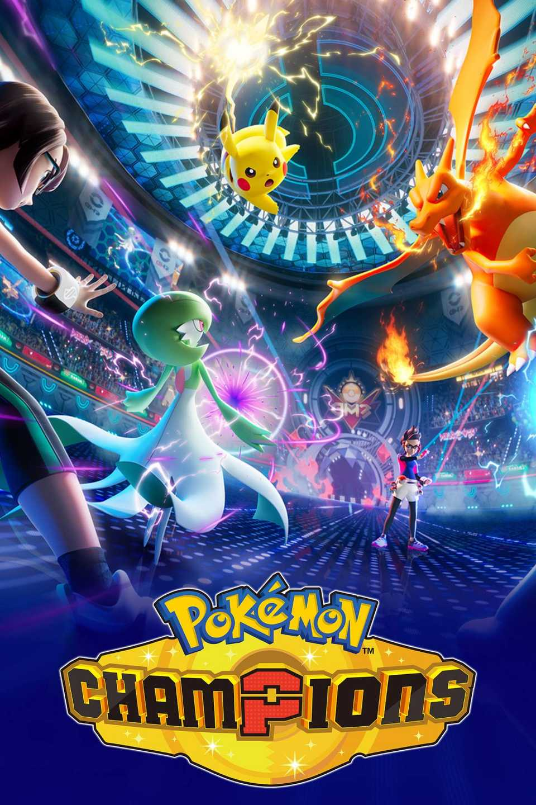
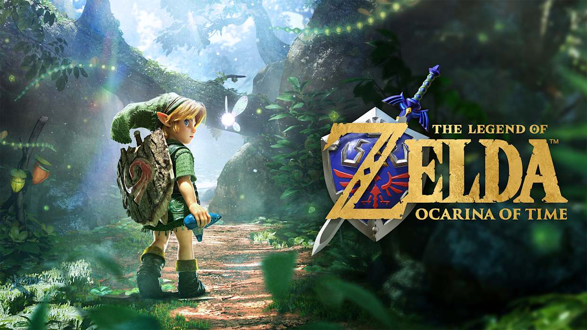

Welcome to Game Wiki!
Selamat datang di Game Wiki! Ini adalah tempat berkumpulnya para pemain untuk berbagi ilmu, strategi, dan panduan lengkap tentang Game. Baik kamu seorang pemula yang baru mulai petualangan atau pemain veteran yang mencari data stat mendalam, wiki ini punya semua yang kamu butuhkan. Mari bersama-sama melengkapi ensiklopedia ini! Jangan ragu untuk menjelajah, memperbarui informasi, atau berkontribusi pada artikel-artikel yang ada. Selamat menjelajah, Gamers!
Update Games

Pokemon Champions

The Legend of Zelda: Ocarina of Time Remake

One Piece: Grand Gourmet